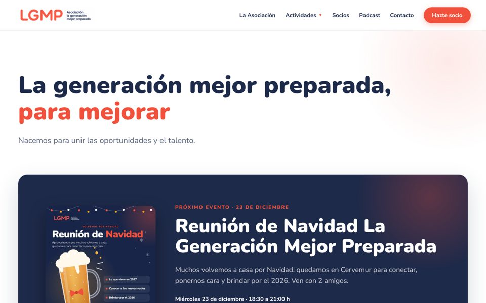
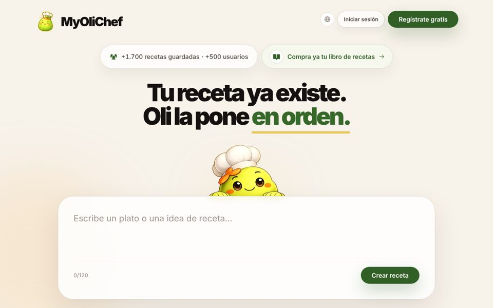
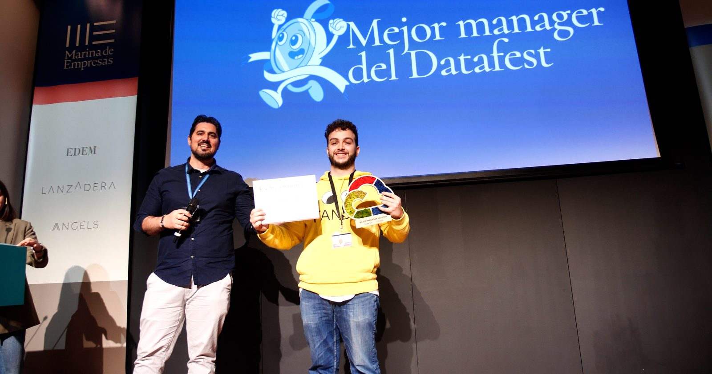

Juan Francisco López Haro
Growth Manager · GTM & RevOps · B2B SaaS · IA y Data
Juan Francisco López Haro (Juan Fran) es Growth Manager y RevOps en España, especializado en B2B SaaS: GTM, demand generation, CRO, marketing automation, SEO/GEO e IA aplicada al funnel. Perfil híbrido único: Derecho y ADE, auditoría financiera y Máster en Data Science y Big Data. Disponible en remoto e híbrido (Madrid / Murcia).
FANDIT: crecimiento B2B con IA y datos
Growth Manager desde 2023. Lidero el crecimiento de FANDIT, el SaaS de subvenciones para asesores y empresas: desde la captación en frío y las redes sociales hasta la demo, la conversión y el onboarding, midiéndolo todo.
Presencia en medios
Apariciones recogidas en FANDIT en medios
Proyectos propios

Podcast La Generación Mejor Preparada
Carrera profesional, procesos de selección y actualidad. Sus entrevistas han tenido eco en El Confidencial y La Vanguardia. Hoy también asociación, que presido.

My Oli Chef
Producto construido con IA + APIs + front-end. +1.700 recetas y +500 usuarios activos captados por orgánico / inbound. Responsable de distribución, CRO y retención. También en App Store.
Guerreros 2026
App móvil de reto fitness: un grupo de amigos registra sus entrenos, suma puntos y compite en un ranking. Gamificación y retención diaria.
English SRS
Mi propio Anki: app de repaso espaciado para mejorar inglés, programada con IA para no depender de apps de pago en iPhone/iPad.
Experiencia
Growth Manager — FANDIT
SaaS B2B de subvenciones para asesores · Remoto
- Estrategia GTM y crecimiento B2B de principio a fin y desarrollo de la estrategia comercial.
- Funnels de ventas desde la captación en frío hasta la conversión, con medición de todo el embudo: +120% en captación de clientes.
- Cálculo del ICP y análisis de las demos realizadas y su conversión.
- Estrategia en redes sociales y marketing automation sobre CRM.
- Colaboración estrecha con producto, desarrollo del onboarding y reducción del churn un 30% dirigiendo al equipo de Customer Success.
- Integración de IA y APIs: +20 herramientas conectadas, stack propio con Claude Code, desarrollo del MCP de FANDIT y contenido automatizado en LinkedIn, blog y YouTube.
- Diseño y puesta en marcha del Centro de Ayuda de FANDIT, conectado por API, e impulso de la presencia en medios.
Presidente — Asociación "La Generación Mejor Preparada"
Relaciones institucionales, estrategia de contenidos, desarrollo web y gestión de ayudas y subvenciones. Liderazgo de proyecto de principio a fin.
Abogado tech — Autónomo
Abogado especializado en empresas tecnológicas y startups: subvenciones a la innovación y la digitalización, y derecho tributario y financiero aplicado a negocios tech.
Senior Financial Auditor — Dasem Business Solutions
Auditoría financiera, planificación estratégica y fiscalidad (IS, IRPF).
Premios y formación
🏆 Premios y reconocimientos
- Mejor Manager del Datathon (Datafest) — competición de datos en Marina de Empresas (Lanzadera / EDEM / Angels) con Google.
- 3.º mejor Trabajo Fin de Máster (TFM) de la promoción del Máster en Data Science, Big Data & Business Analytics (UCM).
🎓 Formación y títulos
- Máster en Data Science, Big Data y Business Analytics — Universidad Complutense de Madrid (2023–2024), nota 9,3.
- Máster de Acceso a la Abogacía — UNED (2019–2021).
- +8 certificaciones y +18 aptitudes validadas (conversión, marketing automation, HubSpot, Python).
- Graduado en Derecho y Administración de Empresas.
Han hablado de mis proyectos
Si haces cosas, pasan cosas
Llevo toda la vida sin parar: derecho, auditoría, datos, growth, un podcast y apps propias. La IA me ha multiplicado la curiosidad: ahora cada idea se puede construir en días.
Dos peces jóvenes se cruzan con un pez mayor. «Buenos días, chicos, ¿qué tal está el agua?». Al rato, uno le pregunta al otro: «¿Qué demonios es el agua?».— David Foster Wallace
Growth que se construye, no solo se planifica
¿Hablamos de crecimiento?
Growth, RevOps e IA aplicada al funnel B2B SaaS.
